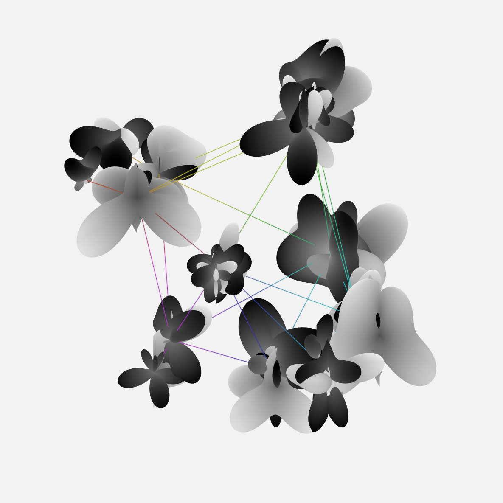

Summary
In this experiment, Geometric Message Passing Networks are leveraged to predict forces in 3D structural designs. Utilizing a dataset comprising 30,000 1-complexes, the study establishes a detailed scheme to compute force vectors within these complexes based on given geometric and positional parameters. The introduction of composite harmonic expansions and the Clebsch-Gordan tensor product enables the transformation and interaction of various tensor types, facilitating a more nuanced representation of forces. The model is trained to regress the forces tensor with a Mean Absolute Error (MAE) optimization criterion, showing significant promise especially when employing G-morphic and nonscalar features, as evidenced by a lower MAE score compared to other methods. Although the method demonstrates a robust and computationally efficient framework for accurate force predictions, validation has been limited to synthetic datasets, indicating a need for further testing on real-world structures.Dataset

Implementation of composite harmonic expansions and CG TP
Converting feature vectors $\mathbf{x}_{\sigma_i}$, attribute vectors $\mathbf{a}_{\tau_i}$, and ground truth vectors $\mathbf{y}_{\sigma_i}$ into composite steerable vectors necessitates the specification of the types $l$ of basis functions involved, as well as the multiplicities of each type. A type-$l$ vector, characterised by its dimension $2l+1$, pertains to scalar quantities if $l=0$, to vectors if $l=1$, and to rank-2 tensors if $l=2$. Higher orders ($l > 2$) are generally less prevalent in practice. Importantly, multiple basis functions of an identical type $l$ may co-exist within the same representation. For the effective implementation of composite steerable vectors and irreducible representations, we utilise the e3nn library which provides a comprehensive framework that enables the formulation of composable $G$-morphic operations for learning tasks involving three-dimensional data. We set the number of hidden features to 32 and restrict the $\text{max}(l)$ to 2 for features and to 1 for attributes. Following this setting, the basis functions that form the hidden representations, $\mathbf{f}_i$, are distributed so:13x0e+3x1o+2x2e, which is a symbolic notation within the e3nn framework. This nomenclature
indicates that there are 13 or irreducible representations of type $l=0$, 3 of type $l=1$, and 2 of type $l=2$. Given that type $l=0$ has a single mode, type $l=1$ has 3 modes, and type $l=2$ has 5 modes, the total
amounts to $13\times1 + 3\times3 + 2\times5 = 32$ basis functions. The suffixes `e` and `o` serve as parity indicators, representing even and odd parities respectively among the basis functions. It is noteworthy that the
parity properties of spherical harmonics are intrinsically linked to their type $l$. Parity transformation or parity inversion is the flip in the sign of spatial coordinates. For three-space, we can express this as:
$\mathbf{P}:\left(\begin{smallmatrix} x \, y \, z \end{smallmatrix}\right)^T \mapsto \left(\begin{smallmatrix} -x \, -y \, -z \end{smallmatrix}\right)^T$. Upon execution of this transformation, the spatial coordinates
are inverted relative to the origin of the coordinate system. Two irreducible representations of parity are possible. An object possessing even parity ($P=1$) remains invariant upon undergoing a parity transformation.
Conversely, an object with odd parity ($P=-1$) becomes the negation of its original state following the transformation. For instance, vectors are odd; they will change their sign under parity transformation. On the other
hand, the cross product of two vectors yields an even quantity, termed a pseudovector, which remains invariant under inversion of the coordinate frame. The Clebsch-Gordan tensor product, allowing for the combination of
tensors of different types into a new, composite tensor space, facilitates the interaction between spherical harmonics of various types. Otherwise, the model would be restricted to linear combinations involving only the
harmonics of identical types. Such limitations would effectively preclude any interaction between, for instance, scalar spherical harmonics of type 0 and their vector-valued counterparts. It is crucial to emphasise that
not all combinations of tensor types are possible. When considering two input representations—or spherical harmonics—of types $l_1$ and $l_2$, the output representations must conform to type $l$, and are subject to the
inequality $|l_1 - l_2| \leq l \leq l_1 + l_2$. Consider input representations specified as 5x0e+5x1e and 6x0e+4x1e, and an output defined as 15x0e+3x1e. In this setting, there are
960 compatible paths, each output being a learned weighted sum over these paths. This flexibility permits outputs with any specified multiplicity. In the given example, there exist $5 \times 4 + 5 \times 6 + 5 \times 4 =
70$ paths conducive to creating a representation of type $l=1$ (1e). Given that our output specification demands only three such representations, each of these would constitute a weighted sum of the 70
possible paths, or representations of type $l=1$.
Training
The task at hand involves regressing the forces tensor, $\hat{\mathbf{y}}$, which has a dimensionality of $|\sigma| \times \mathbb{R}^C = 20 \times 3$. The optimisation criterion is the Mean Absolute Error (MAE) between the predicted and ground-truth force vectors. The harmonic expansions are restricted to a maximum degree, $l$, of 1. To this end, the input features and attributes are specified in the form1x0e+1x1o. A
total of 32 hidden features are allocated, adopting the form 130x0e+42x1o. 24,000 complexes are designated for the training set, while an additional 6,000 are reserved for validation. The model consists of
three message-passing layers, has a total parameter count of 692,000, and is trained using a batch size of 64 and. The training is configured with an initial learning rate of $3e^{-4}$ and uses a cosine annealing
learning rate scheduler.
Results
| G-morphic | Nonscal. | MAE | Time [s] |
|---|---|---|---|
| + | - | .0204±.00019 | .0159 |
| + | + | .0186±.00015 | .0165 |